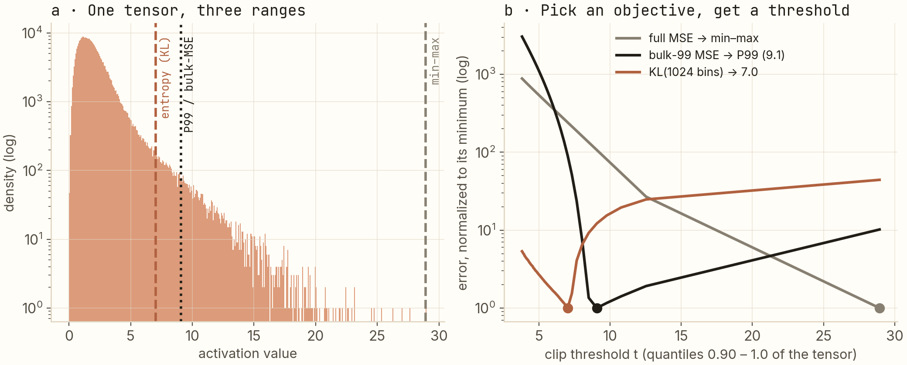
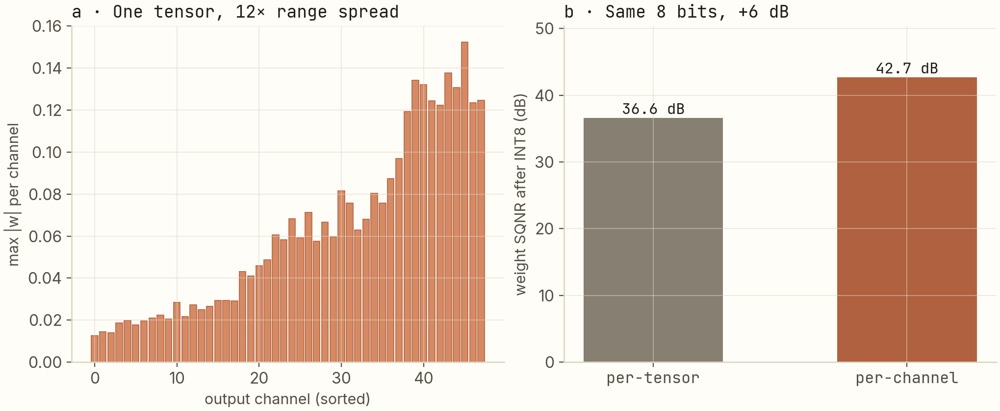

256 levels is plenty. Here's the math that proves it.
A from-scratch derivation of INT8 quantization — the technique that shrinks a neural network 4× and makes it run on integer hardware — written for someone who knows what a neural network is but has never had to ship one to production.
Quantization converts a network's floating-point numbers to 8-bit integers (only 256 distinct values). This post derives how that conversion works, proves its error is bounded by half a code step, and shows the two decisions that decide whether it degrades your model: where to clip the value range (three calibration objectives pick three different answers — on purpose) and per-channel scaling for weights (worth +6 dB for free). Applied to a real-time X-ray product, it's how we hit 600+ FPS with <5% quality loss.
What this post is about
Neural networks are trained and prototyped in floating point — typically 32-bit floats (FP32), 4 bytes per number. But the hardware that runs inference fastest — the integer units and tensor cores on GPUs and embedded chips — works on integers, and moves 4× less data when each number is 1 byte instead of 4. Quantization is the discipline of converting a trained network's numbers to low-width integers — usually 8-bit (INT8), i.e. only the 256 integer values 0…255 — while keeping the network's output intact.
That sounds lossy, and it is. The interesting claim is that it's barely lossy, and that the reasons are computable. This post walks the whole chain from first principles:
- The conversion itself — one affine formula, and a hard bound on the error it introduces.
- Calibration — the one genuine decision (where to clip the range), with an experiment where three sensible objectives pick three different answers.
- Per-channel weights — a free upgrade that recovers +6 dB of signal quality.
Prerequisites: you should know roughly what a neural network is (layers, weights, backpropagation-as-concept). Everything else — including what FP32, activations, and TensorRT mean — is defined below as it appears. If you can follow a derivative, you're qualified.
The vocabulary you'll need
- Weights are the network's learned parameters. Activations are the numbers that flow through the network at run time when an input passes through — each layer's output. Both are just big arrays of real numbers; both must be quantized.
- FP32 = 32-bit floating point: 4 bytes, ~7 decimal digits, the training default.
- INT8 = 8-bit integers: 1 byte, 256 distinct values.
- TensorRT is NVIDIA's inference compiler — it takes a trained model graph and produces an optimized, deployable engine; quantization is one of its transforms.
- Calibration = the process of choosing the quantization ranges by running sample inputs through the network and looking at the actual value distributions.
The project behind the math
I'm not quantizing for sport. At work I own AIMAG, an X-ray image-enhancement product that runs inside the cath-lab — while a cardiologist threads a stent through a patient's coronary artery, our network upscales and denoises the live fluoroscopy feed. "A model that runs when you feel like it" is not an option there: frames arrive on a fixed clock, and the enhancement has to keep up, every frame, alongside the rest of the imaging stack on the same workstation. Quantization was the single highest-leverage change in making that possible. The stage-by-stage pipeline (PyTorch → ONNX → TensorRT → C++) is walked through in this repo; the AIMAG case study has the full product story.
1. The conversion, derived
Here is the entire problem: you have real numbers in a known range [xmin, xmax] and 256 integer codes to represent them. Everything in this section is the solution to that one sentence.
The standard answer is an affine (straight-line) map — a scale s and an offset z — chosen so the range covers all 256 codes exactly. Demanding that xmin ↦ code 0 and xmax ↦ code 255 gives two equations in two unknowns; solve them and you get:
q = round(x / s) + z, s = (xmax − xmin) / (2b − 1), z = round(−xmin / s)
Worked example, from a real activation tensor spanning [−2.1, 3.4] with b = 8:
- s = 5.5 / 255 ≈ 0.0216 — the value of one code step
- z = round(2.1 / 0.0216) = 97 — the code that represents the value 0
The error bound is now one line. Rounding moves a value by at most half a step, so the reconstructed value x̂ satisfies
|x − x̂| ≤ s / 2 ≈ 0.0108 — for every value in range, always.
That inequality is the entire "is 8 bits enough" calculation: compare s/2 against the smallest difference your application can perceive. A network whose activations span units will shrug off thousandths of noise per element — it sums over thousands of them. A physics model tracking 10⁻⁶ differences won't. This is why INT8 is routine and INT4 needs care: halving the bits doubles s and doubles the bound.
One more consequence worth savoring: because both maps are straight lines, the convolution y = w·x can run as pure integer arithmetic, and the two quantization scales collapse into a single output multiplier (sw·sx/sy) applied once. That folding is why the integer kernels are worth building at all.
2. Calibration: the one real decision
Section 1 assumed you know [xmin, xmax]. For weights you do — they're fixed after training. For activations you don't: their ranges depend on the inputs at run time. You estimate them by calibration — running a few hundred representative inputs through the network and measuring.
Here's why this is a genuine decision and not bookkeeping. Real activation values are lopsided: a huge bulk of values clustered near zero, and a long thin tail of large values. The naive choice — use the observed min and max — forces your 256 codes to cover the whole tail, and the bulk, where 99% of values live, gets squeezed into a few dozen codes. The alternative is to clip: declare values above some threshold t all equal to t, and spend the codes on the bulk instead. Clipping the tail is an error; starving the bulk is also an error. Where's the optimum?
I built a synthetic activation tensor with exactly that shape — 99% of its mass on [0, 4], a smooth tail decaying out to ~29 — and ran three calibrators over it. Same tensor, same 256 codes, three different ranges:

The three objectives disagree, and each is right about something:
- Full mean-squared error picks min–max (threshold 28.9). This surprised me the first time I computed it, and it's worth sitting on: squared error weights a rare far-outlier by its squared distance, so plain L2 always votes to keep the tail. But the bulk pays: at this range, values in [0, 4] get only 4/29 × 255 ≈ 35 distinct codes.
- Bulk-99 MSE picks the 99th percentile (9.1). Measure error only where the mass lives, and the optimum snaps to the P99 boundary. This is percentile calibration, derived rather than configured.
- KL divergence — entropy calibration — picks 7.0. Instead of averaging squared errors, minimize how much the distribution of quantized values diverges from the original (1024-bin histograms here; TensorRT's entropy calibrator is this objective). It lands just past the bulk edge: ~4× more codes for the 99% than min–max gives.
The takeaway I carry into production: your calibrator is a statement about which errors you tolerate. Our visual quality tracked distribution shape, not MSE — entropy calibration won. A control system tracking small deltas might reasonably vote the other way. "Which calibrator and why" should be answered from experiment, not from the default config.
3. Weights: the per-channel trick
Activations are dynamic, so you calibrate. Weights are static, so you can do something better: give each output channel its own scale. (A convolution's weight tensor is a stack of filters — one per output channel — and channels are independent for this purpose.)
Why it matters: in any trained conv layer, filter magnitudes differ wildly — my synthetic replicate shows an 11.8× spread between the calmest and loudest channel. One shared scale forces every channel to live inside the largest channel's range; the quiet channels quantize on a grid sized for someone else.

+6 dB is a factor of ~2 in RMS error, at zero latency cost — per-channel scales are build-time constants folded into the kernel's output stage. And this is why "we tried INT8 and it broke" almost always means one of: min–max calibration on a skewed tensor, per-tensor weights, or both. The bits are rarely the problem; the range is.
What this bought in production
| Precision | Size | Throughput | Cost |
|---|---|---|---|
| FP32 | 4 B / weight | baseline | none — the reference |
| FP16 | 2 B / weight | ~2× | free — no calibration needed |
| INT8 | 1 B / weight | ~2× + 4× memory | calibration + per-channel scales |
On the AIMAG serving stack, entropy calibration + per-channel weights + an INT8/FP16 mix is where 600+ FPS on an RTX 4090, a 70% latency cut, 35% lower VRAM, and <5% quality loss came from. The "<5%" is doing real work in that sentence — it's a measured perceptual comparison on clinical-style imagery, and it's the number that made sign-off possible.
Closing the loop honestly: if calibration can't find a range that works, the next tool is quantization-aware training — simulate the quantization during fine-tuning so the network learns weights that are happy on the integer grid. We didn't need it. Knowing it exists, and when to reach for it, is the difference between using a tool and understanding one.
If you remember three things
- The quantizer is an affine map with a provable s/2 error bound — "is 8 bits enough" is a one-line comparison, not a vibe.
- Calibration is an objective choice: L2 keeps tails, entropy feeds bulks. Pick the error you'd rather tolerate.
- Per-channel weight scales are free quality — +6 dB in the experiment here.
Reproduce
The five-stage pipeline — PyTorch → ONNX → TensorRT → C++ — one notebook per stage, is on GitHub. The calibration and per-channel experiments are ~40 lines of NumPy: sample a heavy-tailed tensor, sweep clip thresholds, compute full-MSE / bulk-99-MSE / KL per threshold. If your three objectives agree, your activations have no tail — re-check with real data.
Next: image search is geometry → Repo on GitHub How it ships: the AIMAG case study